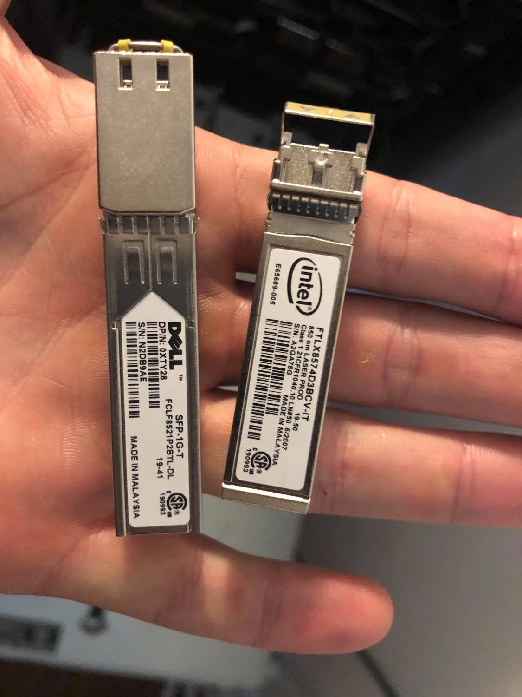
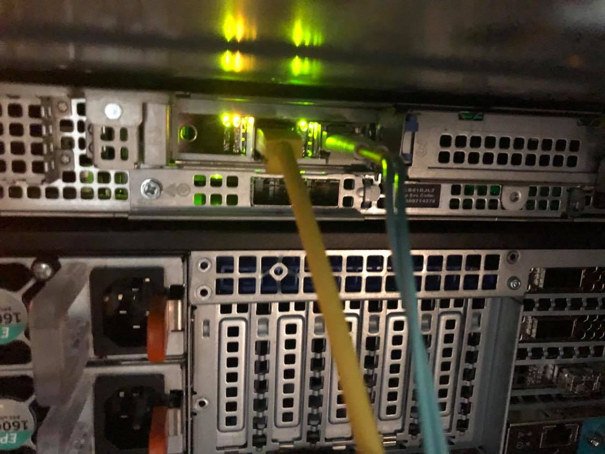
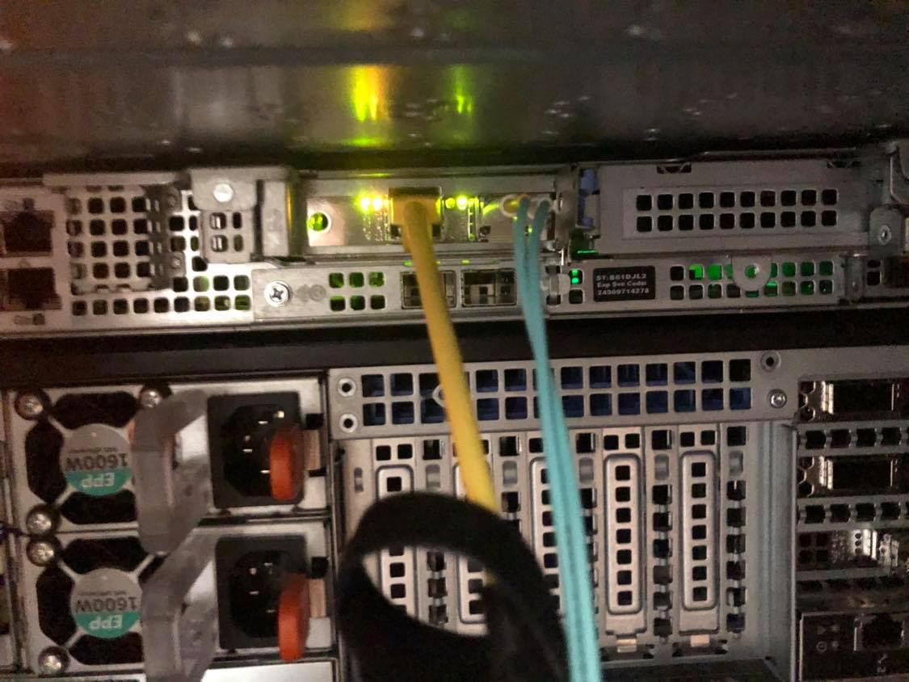

Testing Intel x520 on RHEL 6
RHEL Release
[root@r440 ~]# cat /etc/*-release
LSB_VERSION=base-4.0-amd64:base-4.0-noarch:core-4.0-amd64:core-4.0-noarch:graphics-4.0-amd64:graphics-4.0-noarch:printing-4.0-amd64:printing-4.0-noarch
Red Hat Enterprise Linux Server release 6.10 (Santiago)
Red Hat Enterprise Linux Server release 6.10 (Santiago)
Server/Card Model
# Server
Dell R440
# Card Model
[root@r440 ~]# lspci | grep Network
3b:00.0 Ethernet controller: Intel Corporation 82599ES 10-Gigabit SFI/SFP+ Network Connection (rev 01)
3b:00.1 Ethernet controller: Intel Corporation 82599ES 10-Gigabit SFI/SFP+ Network Connection (rev 01)

Note: As shown in the product documentation is the name of the controller for the Intel x520.
Server Inventory
I have attached the server inventory so that it can be used for comparison. Note: Because I did not use an x520 that came with the box or flash it with idrac compatible drivers it does not appear under network devices, but it does appear under PCI devices as expected.
SFPs Used

Testing
Basic Connectivity
On initial install of RHEL 6.10 both the 1Gb/s ethernet SFP and the 10Gb/s fiber SFP were detected without issue and pulled DHCP addresses as expected:
4: p2p1: <BROADCAST,MULTICAST,UP,LOWER_UP> mtu 1500 qdisc mq state UP qlen 1000
link/ether 90:e2:ba:8b:88:14 brd ff:ff:ff:ff:ff:ff
inet 192.168.1.214/24 brd 192.168.1.255 scope global p2p1
inet6 2601:152:4100:212f:92e2:baff:fe8b:8814/64 scope global dynamic
valid_lft 86393sec preferred_lft 14393sec
inet6 fe80::92e2:baff:fe8b:8814/64 scope link
valid_lft forever preferred_lft forever
5: p2p2: <BROADCAST,MULTICAST,UP,LOWER_UP> mtu 1500 qdisc mq state UP qlen 1000
link/ether 90:e2:ba:8b:88:15 brd ff:ff:ff:ff:ff:ff
inet 192.168.1.242/24 brd 192.168.1.255 scope global p2p2
inet6 2601:152:4100:212f:92e2:baff:fe8b:8815/64 scope global dynamic
valid_lft 86393sec preferred_lft 14393sec
inet6 fe80::92e2:baff:fe8b:8815/64 scope link
valid_lft forever preferred_lft forever
They both operated without modification at the correct speed:
[root@r440 ~]# ethtool p2p1 | grep -i speed && ethtool p2p2 | grep -i speed
Speed: 10000Mb/s
Speed: 1000Mb/s
My initial firmware version was:
[root@r440 ~]# ethtool -i p2p1
driver: ixgbe
version: 4.2.1-k
firmware-version: 0x61c10001
bus-info: 0000:3b:00.0
supports-statistics: yes
supports-test: yes
supports-eeprom-access: yes
supports-register-dump: yes
supports-priv-flags: no
Lights operated as expected:

I went to Dell's support website and pulled the latest driver for the R440 / x520 which was released 30 November 2018.
When I ran the script I was given additional version info:
Update Package 18.08.200 (BLD_311)
Copyright (c) 2003 Dell, Inc. All Rights Reserved.
Release Title:
Intel NIC Family Version 18.8.0 Firmware for I350, I354, X520, X540, and X550 adapters, 18.8.9, A00
Release Date:
October 05, 2018
However this got me This Update Package is not compatible with your system configuration.. I didn't investigate why. I took the card out of another box and added it to this one so I wasn't overly surprised.
I decided to pull directly from Intel. The latest driver I could find was 5.5.5 available here.
Detailed Description
Overview
This is the most current release of the ixgbe driver for Linux*, which supports kernel versions 2.6.18 up through 4.20.
It also has been tested on the following distributions:
RHEL* 6.10
RHEL 7.6
SLES* 12SP4
SLES 15
Ubuntu* 18.04
Changes in this release:
Added support for 4.20 kernel version
Added support for SLES 12SP4
Added support for RHEL 7.6
I ran:
make install
rmmod ixgbe && insmod /root/Downloads/ixgbe-5.5.5/src/ixgbe.ko
to load the driver. I did not see any problems with a speed drop:
[root@r440 ~]# ethtool p2p1 | grep -i speed && ethtool p2p2 | grep -i speed
Speed: 10000Mb/s
Speed: 1000Mb/s
Version confirmation:
[root@r440 ~]# ethtool -i p2p1
driver: ixgbe
version: 5.5.5
firmware-version: 0x61c10001, 255.65535.255
bus-info: 0000:3b:00.0
supports-statistics: yes
supports-test: yes
supports-eeprom-access: yes
supports-register-dump: yes
supports-priv-flags: yes
I confirmed the lights continued to work as expected.
